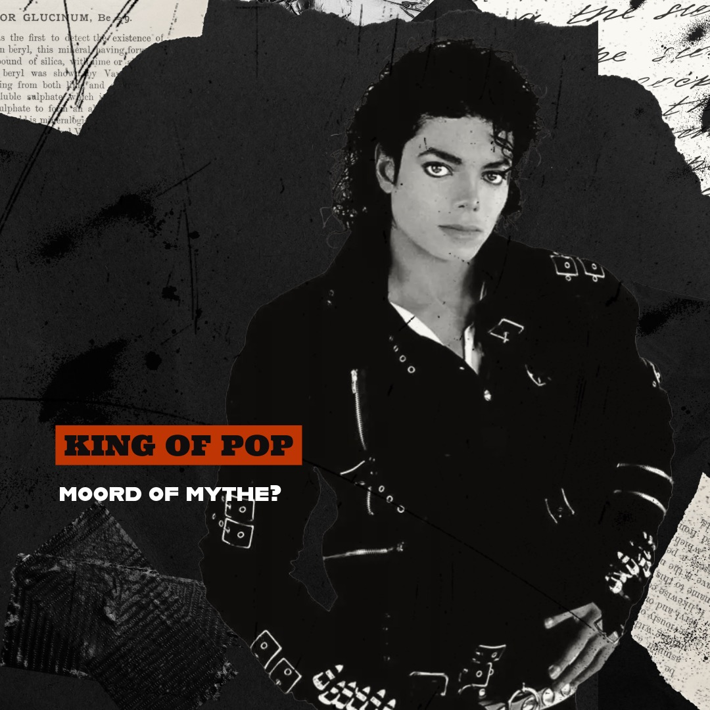
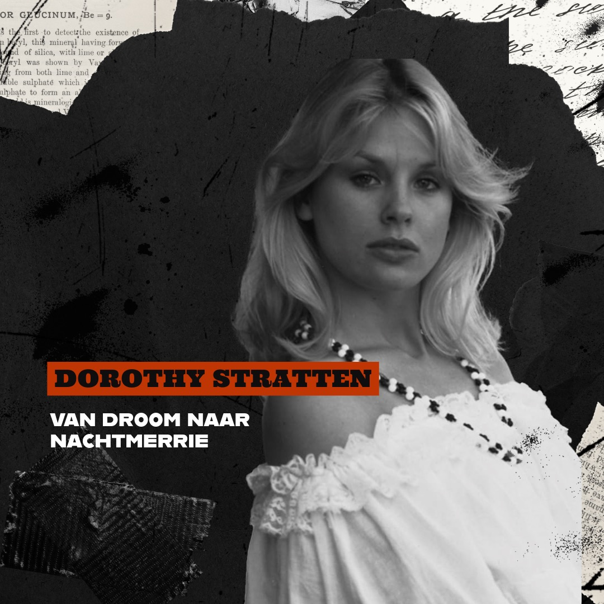

Wij zijn een Nederlandstalige true crime-podcast die de tragische en mysterieuze sterfgevallen van beroemdheden onderzoekt. In Fame's Final Chapter vertellen we de waargebeurde verhalen, gebaseerd op betrouwbare informatie, om je inzicht te geven in wie deze iconen waren, wat hen bijzonder maakte en hoe hun dood een blijvende impact heeft gehad op de wereld.
lees meer
MOORD DOOR VADER: Het verhaal van Judith Barsi
Ducky in The Land Before Time en Anne-Marie in All Dogs Go to Heaven. Misschien heb je deze films als kind gezien of ken je ze nog, maar het verhaal achter de stem van deze karakters is donkerder dan je denkt. Judith Barsi was een 10-jarig opkomend talent dat opgroeide in een donker en chaotisch gezinsleven, dat eindigde in een onvoorstelbare tragedie.
LAATSTE AFLEVERINGEN

THE KING OF POP HOMICIDE: Het verhaal van Michael Jackson
Billie Jean, Smooth Criminal, They Don't Care About Us en Thriller - de liedjes die iedereen kent en uitgebracht zijn door de enige echte King of Pop, Michael Jackson. Maar wie was hij? Wat speelde zich af in Neverland? En hoe werd zijn “onschuldige” overlijden bestempeld als moord?
LUISTER NU

VAN SCHEIDING NAAR MOORD: Het verhaal van Dorothy Stratten
Van Dairy Queen naar de Playboy Mansion. Onzekerheden en dromen kwamen samen in het tragische verhaal van Dorothy Stratten. Haar leven eindigde abrupt door haar jaloerse echtgenoot, Paul Snider, die haar toekomst vernietigde om te voorkomen dat ze een leven zonder hem zou leiden.
LUISTER NU
ONOPGELOST: Het verhaal van Biggie Smalls
Een zogenaamde rap-oorlog tussen hiphopartiesten aan de oost- en westkust, of schuilt daar meer achter? De moord op The Notorious B.I.G. blijft tot op de dag van vandaag een van de bekendste onopgeloste moorden. Eén ding is zeker: vier kogels waren genoeg om Biggie Smalls neer te leggen en de muziekwereld voorgoed te veranderen.
LUISTER NU